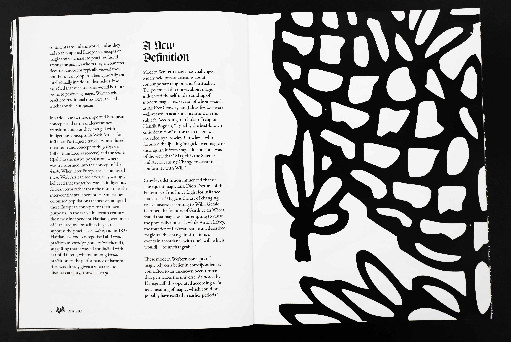
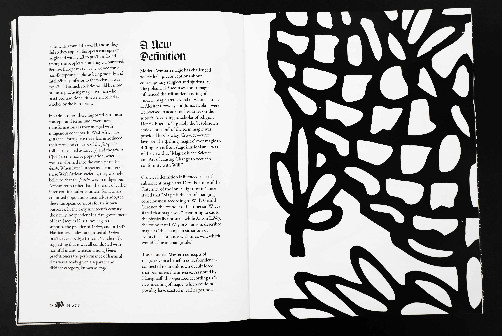

Magic Book
I typeset and designed the Wikipedia article “Magic (supernatural)” as a book. Intended to be comfortably readable while also functioning as an attractive “coffee-table book”, the piece evokes a sense of mystery, foreboding, and adventure through the use of dramatic scale and contrast. The book's typefaces (Respira Black, Ogg, and Garamond) are all based on historical forms and human penstrokes, a reference to the importance of handwriting in real-world magical traditions and the article's historical grounding. The illustrative elements are all from a historical, decorative typeface called Deutscher Schmuck that lends a folkloric tone.


 
